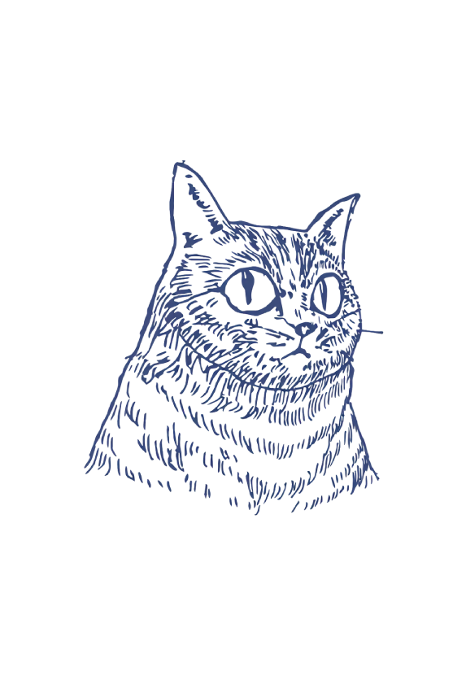

サバトラ商會とは？
(WHAT'S SABATORA SHOKAI)
はじまりは、作者が側溝で身動きできなくなっていたところを拾いあげた一匹の子猫からです。
彼はサバトラ柄の猫で、そのシルバーの希少な毛色は自然界では目立ちすぎるため、
臆病で警戒心が強く、人見知りで、
歩くときは狩りをする時の虎のように低姿勢でソロリソロリと歩きます。
ただ、その姿は完成された生物のように美しく、芸術的で、
出会った中でもとても誇り高い猫です。
新たなる価値を創造し、アプローチしていく中で、
彼の「ひとつの生命の在り方」への憧れを礎とし、
ワクワクするものを提供していく「組織・商店」という意味合いを接合して
「サバトラ商會」となりました。
アート全般、コンテンツ、イベント等、クリエイティブに関するもの、
「日常の中で、あったら少しだけ楽しくて幸せ」なものを
幅広く世の中にお届けしていく、小さな村のような機関です。
